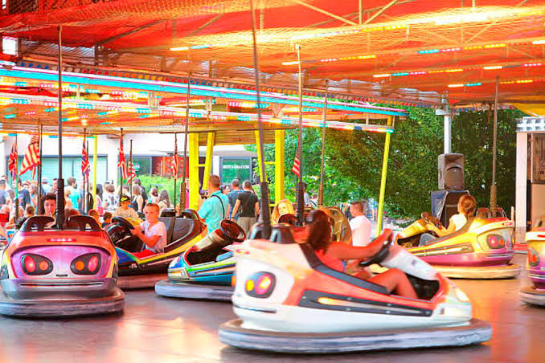
Noleggio autoscontro in Puglia
Autoscontro
Autoscontro per eventi, feste patronali, sagre e luna park itineranti in Puglia. Divertimento per ragazzi, famiglie e grandi eventi.
Scopri di più →Scopri le attrazioni disponibili per eventi comunali, sagre, festival, feste patronali, eventi privati e aziendali.

Autoscontro per eventi, feste patronali, sagre e luna park itineranti in Puglia. Divertimento per ragazzi, famiglie e grandi eventi.
Scopri di più →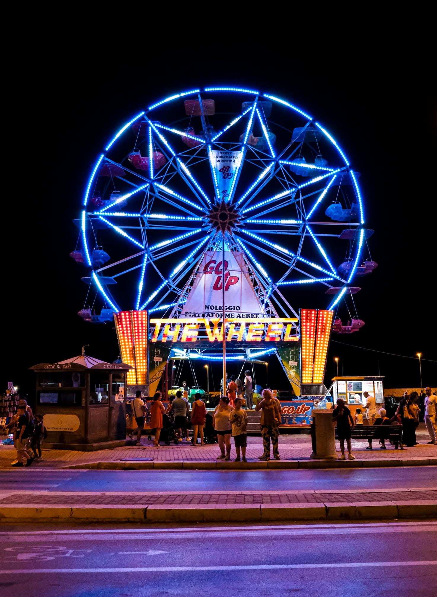
Ruota panoramica per feste patronali, eventi comunali, sagre e manifestazioni in Puglia. Una presenza scenografica per ogni evento.
Scopri di più →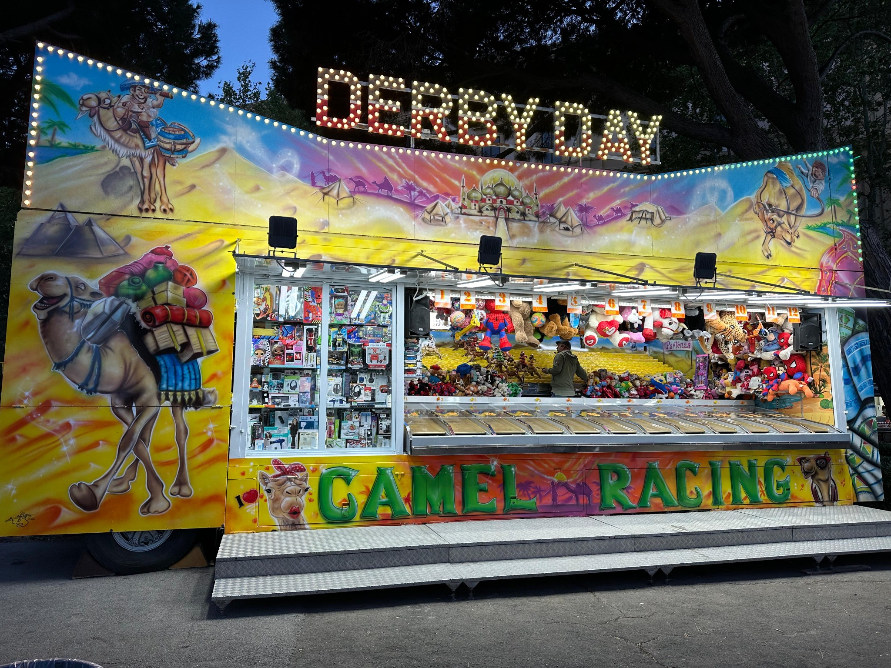
Derby Day, la corsa dei cammelli: attrazione divertente e coinvolgente per bambini, famiglie, sagre e feste patronali.
Scopri di più →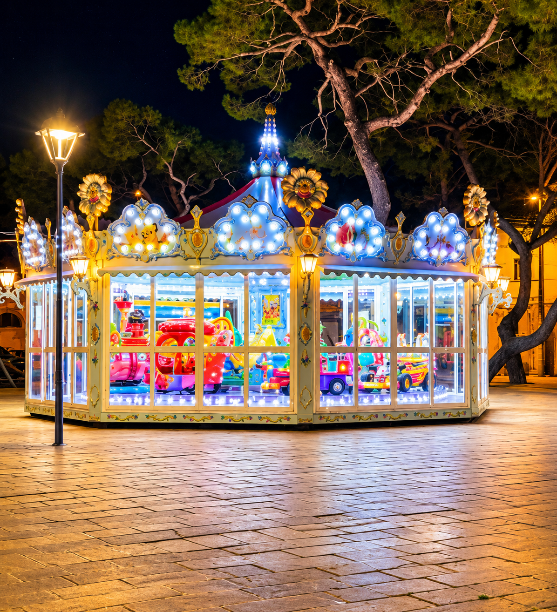
Giostra a cavalli per bambini, ideale per feste di paese, eventi comunali, centri commerciali e manifestazioni in Puglia.
Scopri di più →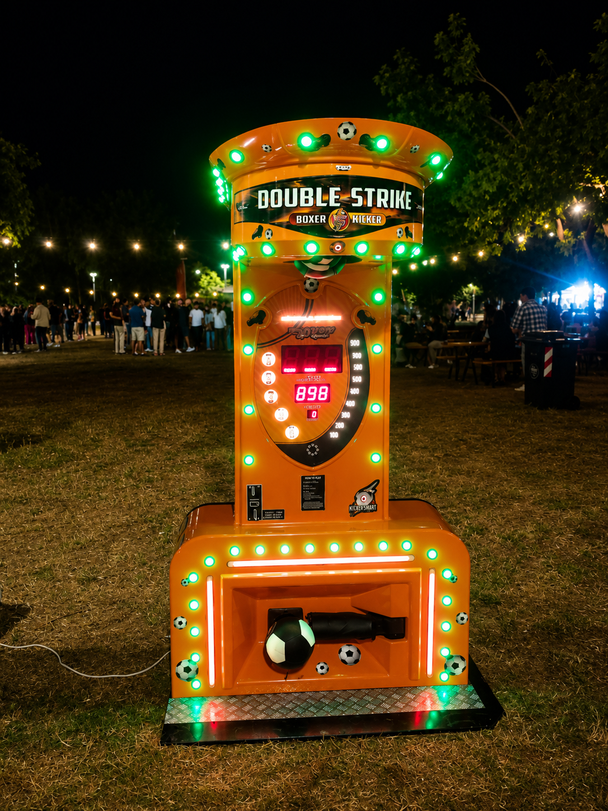
Calciometro per sfide di potenza e intrattenimento in festival, sagre, feste patronali ed eventi aziendali.
Scopri di più →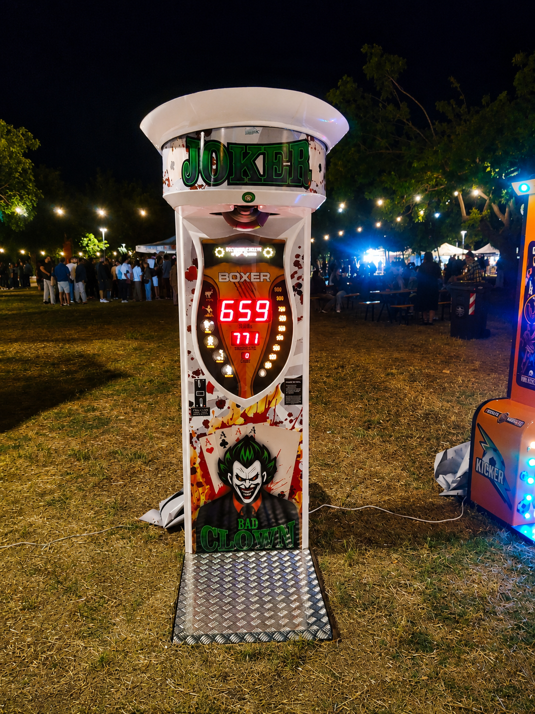
Pugnometro per eventi, luna park, sagre e feste private. Una sfida di forza sempre apprezzata dal pubblico.
Scopri di più →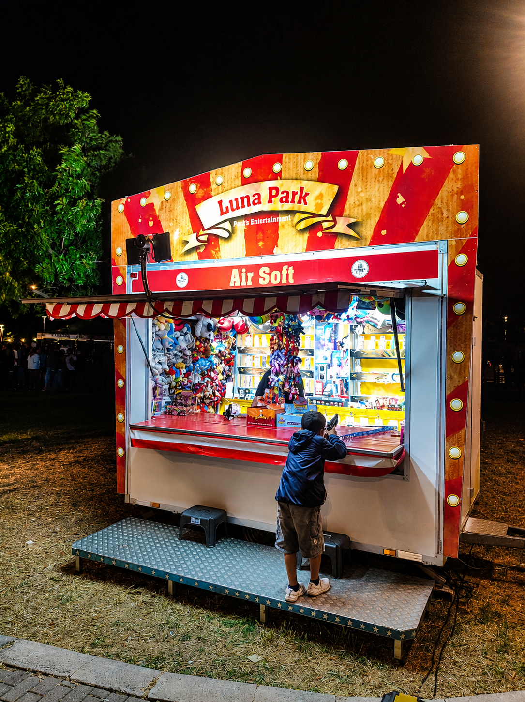
Tiro a bersaglio per feste patronali, eventi comunali, sagre e aree luna park itineranti in Puglia.
Scopri di più →Postazione tiro airsoft per eventi, fiere, festival e aree di intrattenimento in Puglia.
Scopri di più →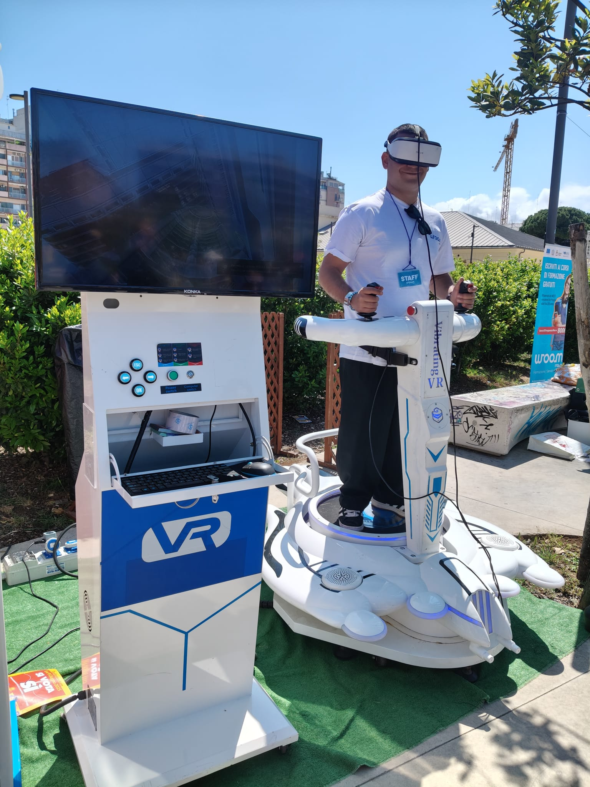
Simulatore VR per eventi moderni, attrazione tecnologica ideale per giovani, festival e manifestazioni.
Scopri di più →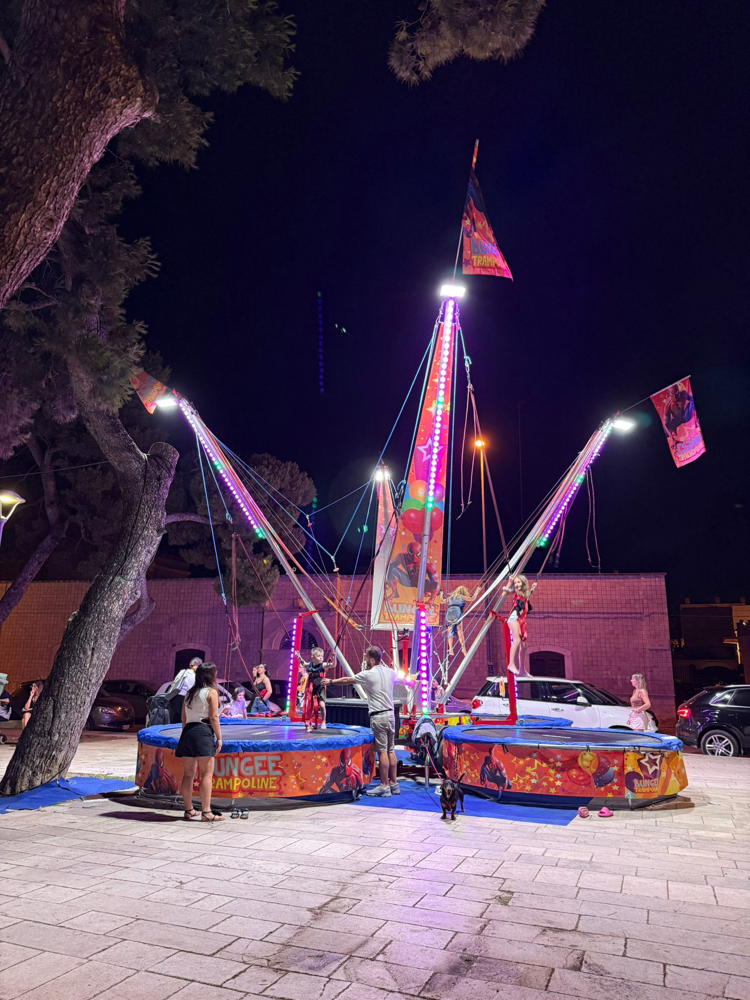
Jumping e salto del trampolino per bambini e ragazzi, perfetto per eventi all’aperto e feste in Puglia.
Scopri di più →
Trenino lillipuziano per bambini, ideale per feste di paese, eventi comunali, centri commerciali e manifestazioni.
Scopri di più →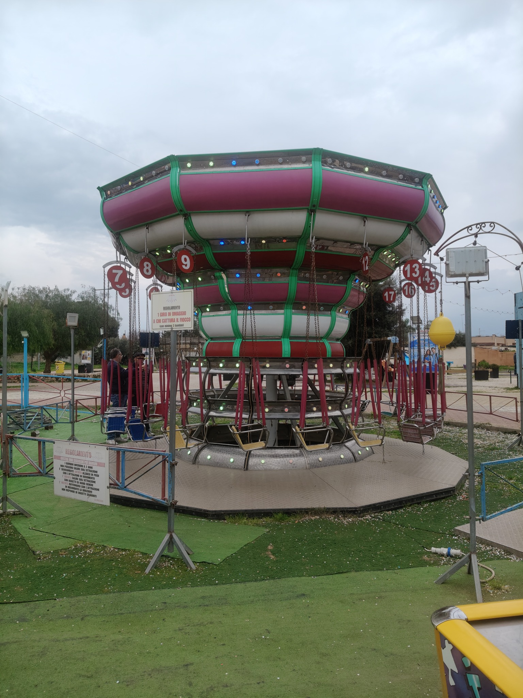
Mini seggiolini per bambini, attrazione classica e colorata per eventi, sagre e feste patronali.
Scopri di più →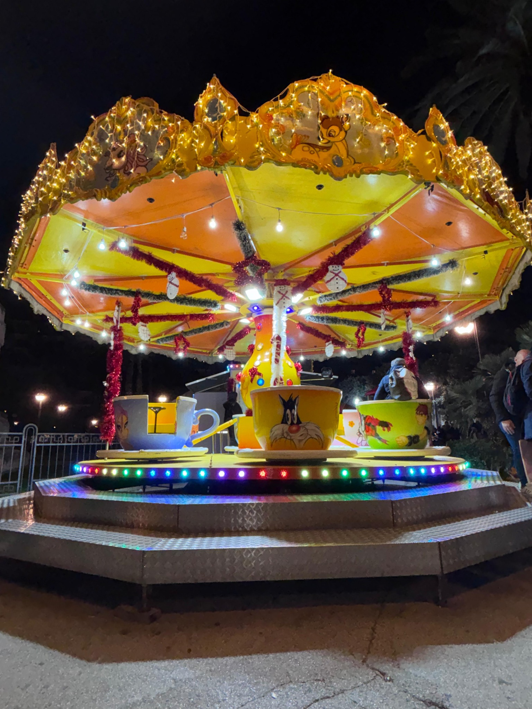
Mini tazze per bambini, una giostra colorata e adatta ai più piccoli per eventi in Puglia.
Scopri di più →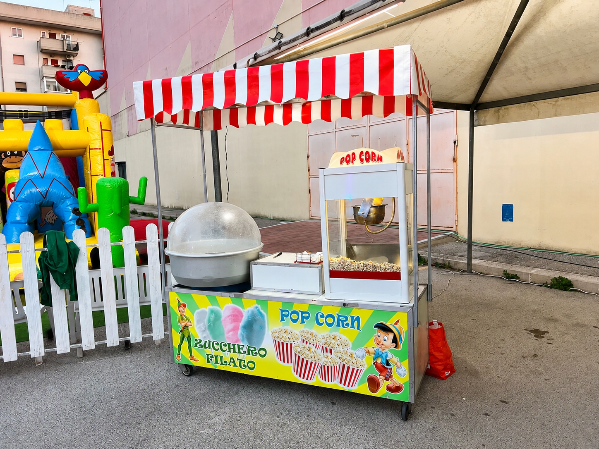
Postazioni pop corn e zucchero filato per completare l’area food e intrattenimento del tuo evento.
Scopri di più →